IEUM RESONANCE / SAME VOICE
파랑 한 사람의 형태를 안팎에 반복
안쪽을 별도로 추적해 다른 특성으로 만들던 구조를 수정했습니다. 하나의 부모 경로와 선별 접힘·위상·두께·흐름·3D 높이 규칙을 바깥과 안쪽이 공유합니다. 안쪽은 공통 형태의 반경 방향 배치만 이동합니다.
현재 구현 후보입니다. 원본의 넓은 되접힘·자연스러운 직조 결·모바일 밀집은 아직 미완료입니다. 입자와 보컬 합성은 이 비교본에서 새로 검증하지 않았습니다.
최신 비교: 큰 접힘 연결 — 기각
세 큰 되접힘과 제한된 선별 위상을 만들었지만, 규칙적인 세 묶음과 삼각 연결부가 원본과 다릅니다. 기본 비교본에 채택하지 않았습니다. 안팎의 같은 특성을 유지했다는 검사만으로 형태 개선을 인정하지 않습니다.
기각 후보 실행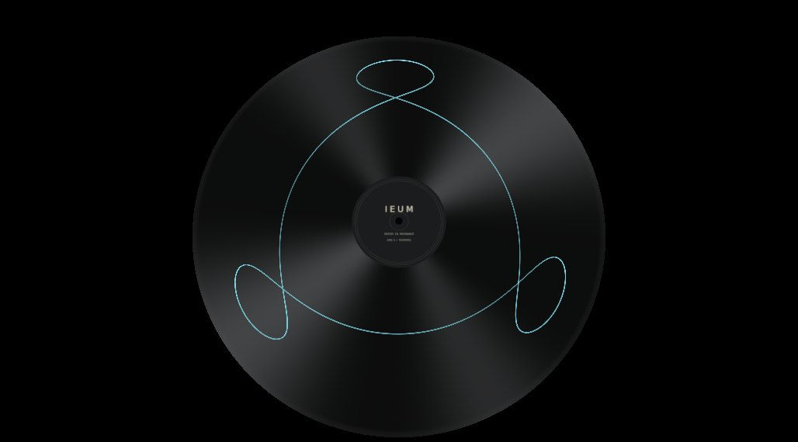
한 선의 전체 연결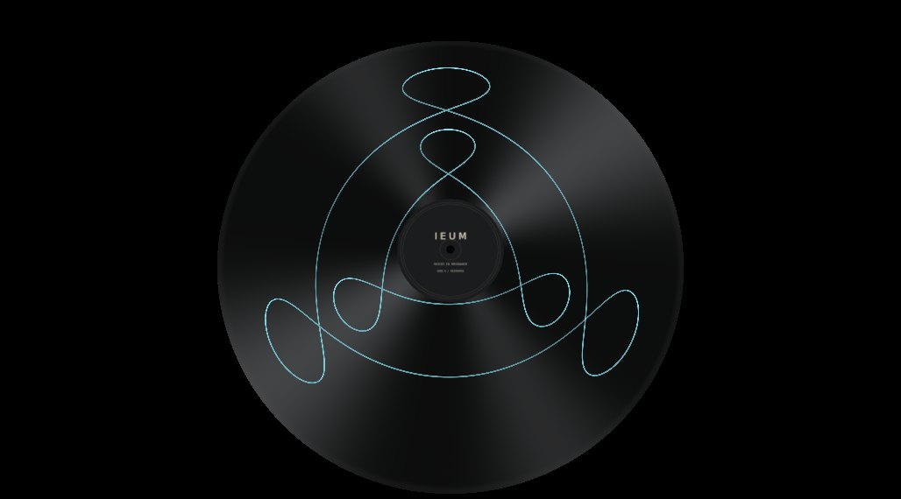
같은 선의 안팎 반복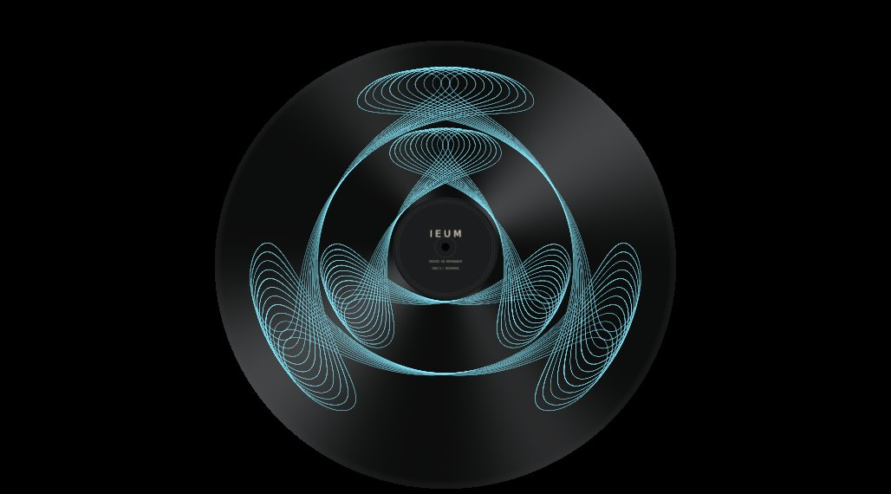
전체 선 — 규칙적 묶음으로 기각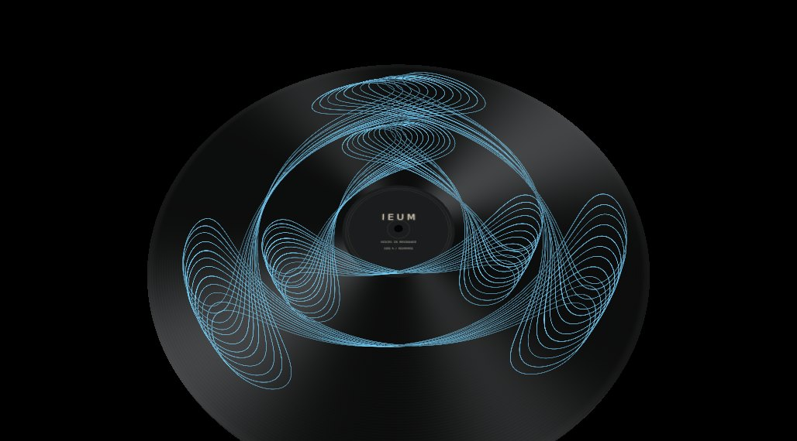
중간 전환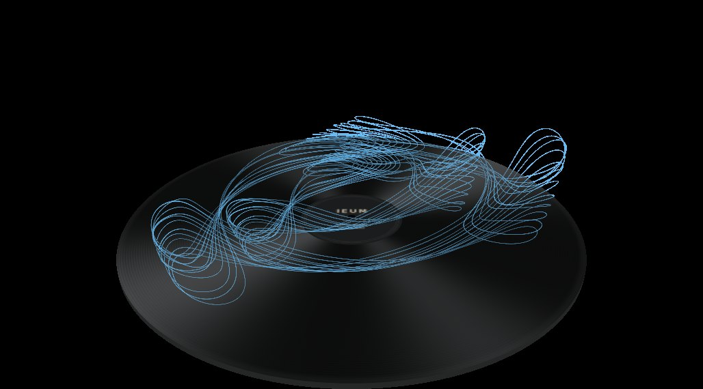
3D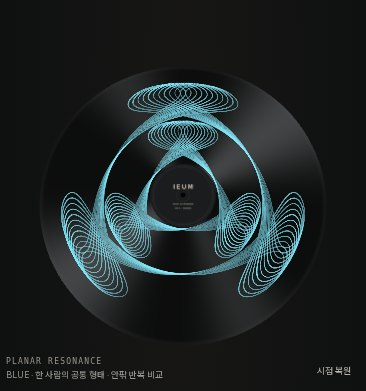
Chromium 오류 0건. 안팎 대응·평면 좌표 유지. 오디오·입자·장시간 검증은 이번 후보에 수행하지 않았습니다.
실제 렌더 · 동일 인물의 반복 확인
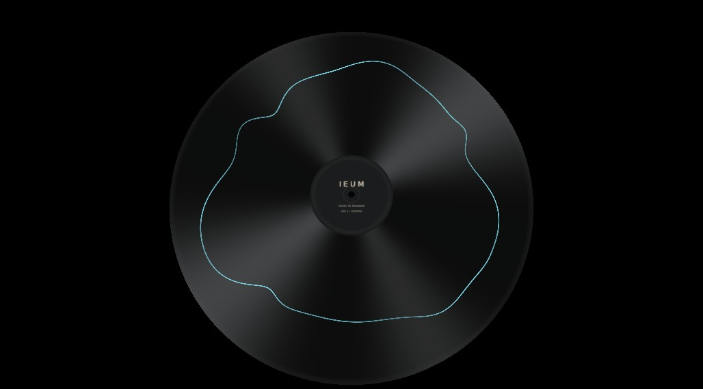
바깥 한 선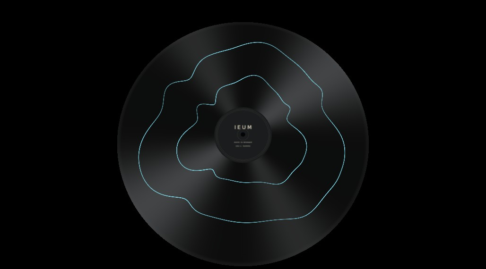
같은 선의 바깥·안쪽 반복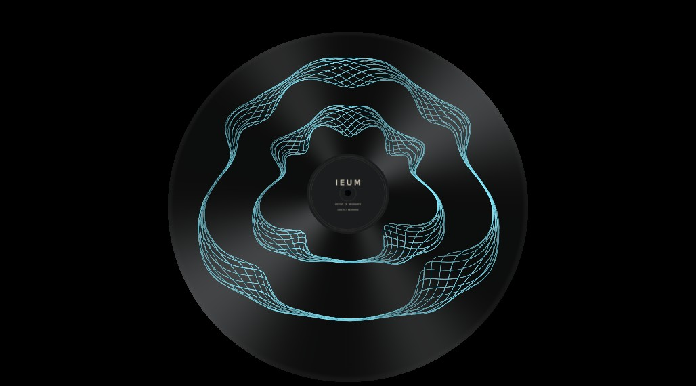
전체 선 · 같은 접힘 규칙전환과 모바일
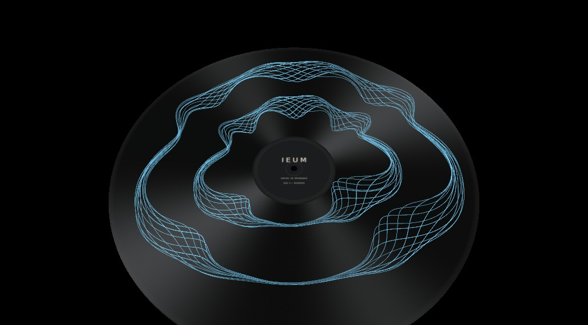
중간 전환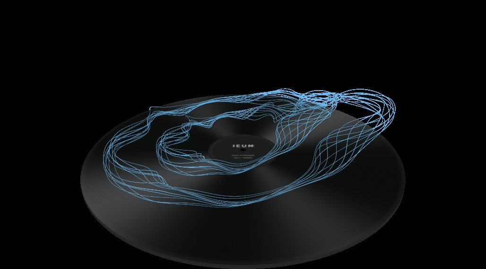
3D · 대응 선 높이 규칙 공유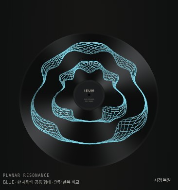
390px 모바일 · 밀집 남음2D 기준 이미지
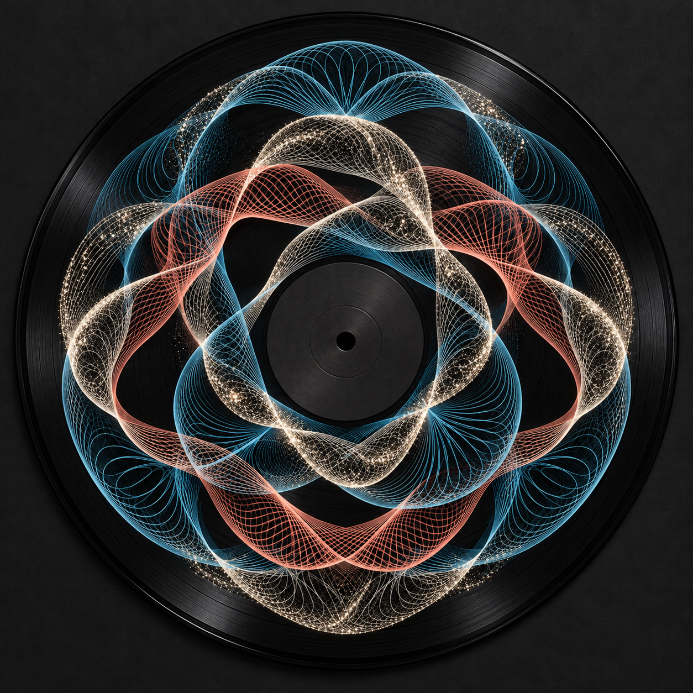
현재 렌더와 이 원본 사이의 형태 차이가 최종 판정 기준입니다. 같은 생성 규칙을 공유한다는 검사 결과만으로 완성 판정하지 않습니다.
후속 후보: 각도 되접힘 확대 — 기각
공통 부모 경로와 안팎 대응은 유지한 채 각도 진행이 되돌아오는 폭을 키웠습니다. 하지만 큰 굴곡이 둥글게 펴지고 작은 고리가 줄지어 생겨 원본과 다릅니다. 기본 비교본에는 적용하지 않았습니다.
기각 후보 직접 비교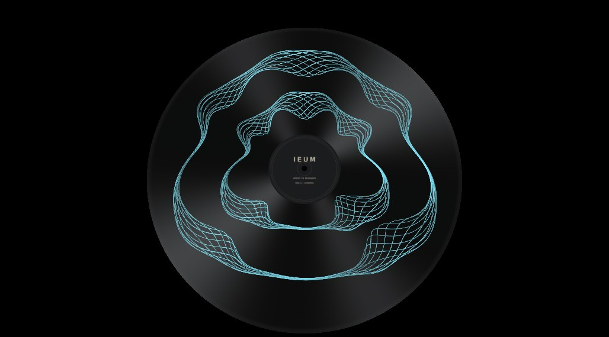
유지한 기존 비교본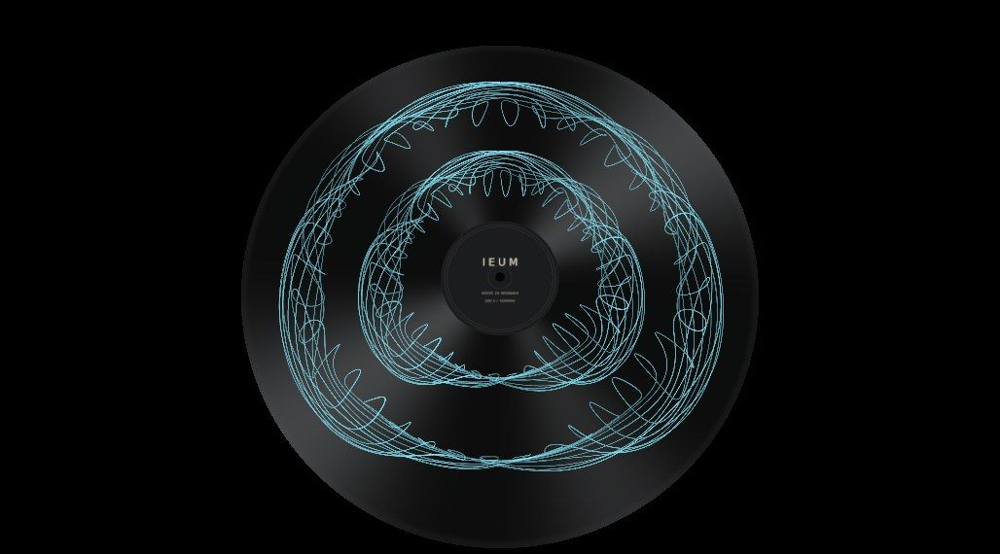
기각 후보 2D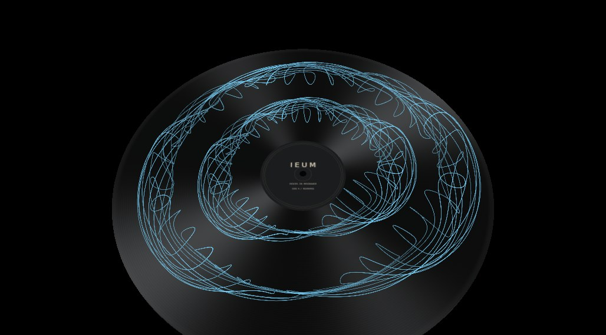
중간 전환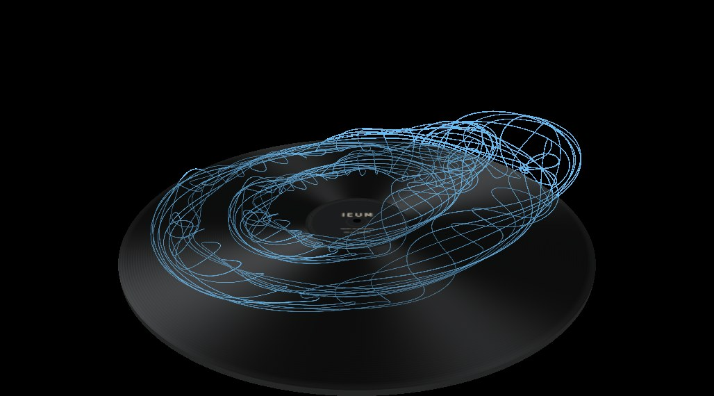
3D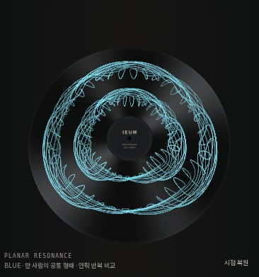
실제 Chromium 오류 0건, 평면 좌표·대응 높이 차이 0. 이 수치는 원본 형태의 충족을 뜻하지 않습니다.